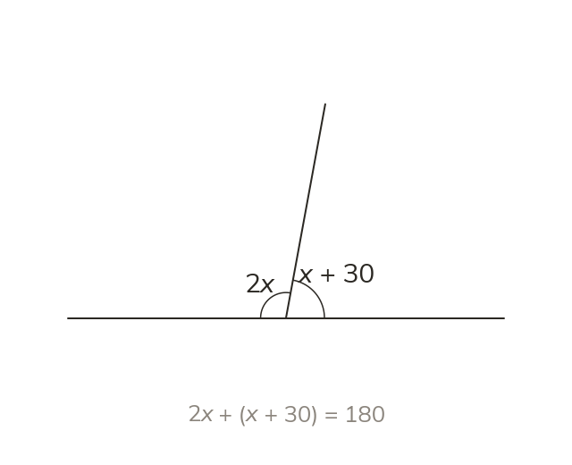
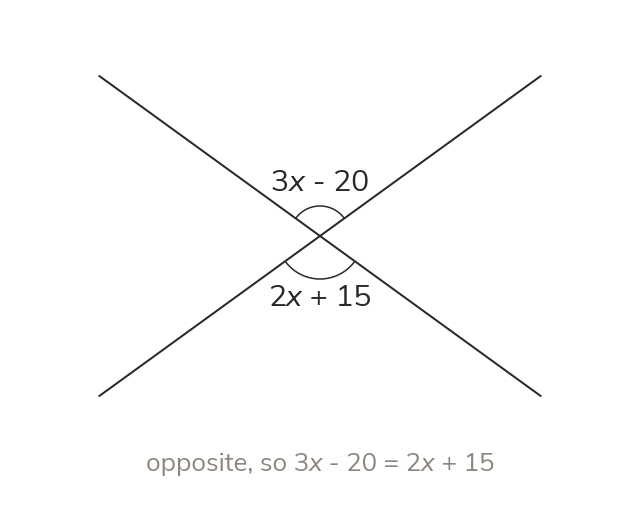
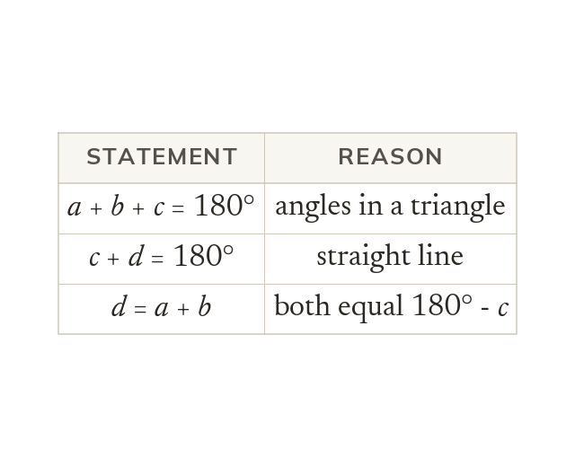
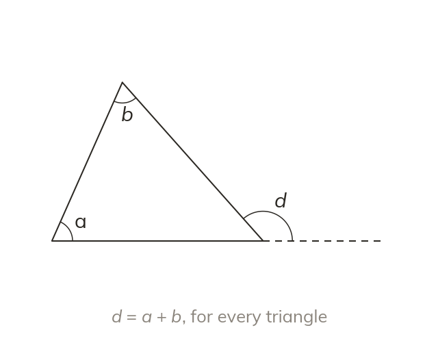

Angle facts become equations
An angle fact gives an equation. So 2x and x + 30 on a line give 3x + 30 = 180.
An angle fact is an equation waiting to be written. Angles labelled 2x and x + 30 on a straight line give 2x + x + 30 = 180.
Every angle fact turns into an equation the moment an angle is written with a letter. Today: solving for those letters, and then proving an angle fact for every triangle at once.
Work down the page at your own pace. Write every answer in your book first, then click to check it.
Read each card, then follow the worked examples one step at a time.

An angle fact gives an equation. So 2x and x + 30 on a line give 3x + 30 = 180.

Opposite angles where two lines cross are equal. So 3x − 20 = 2x + 15 when they are opposite.
Pick an answer. If it's wrong, the feedback tells you which mistake it was.
Read each card, then follow the worked examples one step at a time.

A geometric proof uses letters, so it covers every case. Each line states a fact and its reason.

A triangle's exterior angle equals the two interior opposite angles added. It follows from two facts.
Pick an answer. If it's wrong, the feedback tells you which mistake it was.
Finished? Next lesson: 11H.6.4 Parallel Lines and Bearings.
Log in, then search for a code to practise that skill.
Videos, worksheets and more on each part of this lesson.